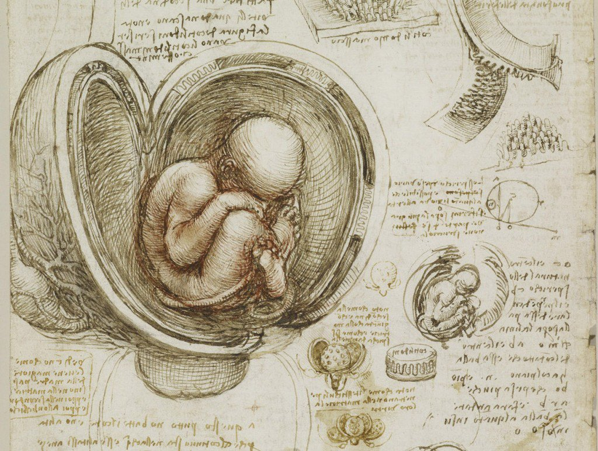

Dettagli
- Artista
- Leonardo da Vinci (1452-1519)
- Data
- ca. 1511
- Tecnica
- Penna e inchiostro su carta
- Dimensioni
- 30.4 × 22.0 cm
- Collezione
- Royal Collection Trust, Londra
Descrizione
Questo disegno anatomico, meticolosamente eseguito da Leonardo da Vinci, testimonia il suo profondo interesse per la scienza e lo studio del corpo umano. È uno degli esempi più significativi del connubio tra arte e ricerca empirica nel Rinascimento.
Luogo
Esposizione permanente presso Royal Collection Trust, Londra